10 部片单 · 恐怖 / 科幻 / 惊悚 / 悬疑 / 剧情
| # | 片名 | 类型 | 评分 / 状态 |
|---|---|---|---|
| 01 | 大白鲨 | 惊悚 / 恐怖（怪兽片 · 暑期大片开山之作） | 7.8 / 97% / 87 |
| 02 | 天外魔花 | 科幻 / 恐怖 / 惊悚（冷战寓言 · 黑白） | 7.8 / 97% / 92 |
| 03 | 活死人之夜 | 恐怖 / 惊悚（现代丧尸片源头 · 黑白） | 7.4 / 95% / 89 |
| 04 | 魔女嘉莉 | 恐怖 / 惊悚 / 剧情（校园霸凌 · 斯蒂芬·金） | 7.5 / 93% / 86 |
| 05 | 凶兆 | 恐怖 / 惊悚（宗教恐怖 · 撒旦之子） | 7.4 / 85% / 7.5 |
| 06 | 星球大战4：新希望 | 科幻 / 冒险（太空歌剧 · 现代大片模板） | 8.4 / 93% / 90 |
| 07 | 窃听大阴谋 | 惊悚 / 悬疑（监听 · 偏执三部曲之一） | 8.1 / 94% / 88 |
| 08 | 总统班底 | 悬疑 / 惊悚 / 剧情（真实事件 · 新闻调查） | 8.0 / 94% / 84 |
| 09 | 海边的曼彻斯特 | 剧情（丧亲 · 无法和解） | 8.6 / 96% / 96 |
| 10 | 借刀杀人 | 惊悚 / 犯罪（一夜 · 洛杉矶） | 7.6 / 86% / 71 |
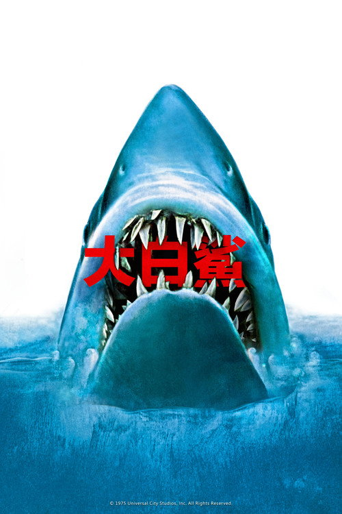
大白鲨 Jaws
「你需要一艘更大的船。」
剧情梗概
海滨小镇艾米蒂的旺季前夜，一个去夜泳的女孩在海里消失了，第二天沙滩上只捡到残骸。新任警长布罗迪要封海滩，镇长不肯——夏天是这座镇子一整年的收入。于是海滩照开，人照下海。等到第二个人、第三个人出事，布罗迪只能自己上船：带上一个年轻的海洋生物学家，和当地最贵的那个鲨鱼猎人昆特。三个人、一条不太结实的船，去对上一头七米半长的东西。
亮点
- 斯皮尔伯格拍这部片时才 27 岁，这是他的第二部长片。预算从 400 万超到 900 万美元，拍摄从计划的 55 天拖到 159 天，他后来回忆「那是一场噩梦，我三次想退出」。
- 剧组做了三条机械鲨鱼（大家都叫它「布鲁斯」），几乎全程故障：海水腐蚀、气压管爆裂、直接沉到海底。这个「根本拍不了」的困境逼出了影史最有效的一次减法——不拍鲨鱼。
- 约翰·威廉姆斯最初写的两音符主题（E-F 交替）被斯皮尔伯格当成玩笑，听完一遍之后立刻改了主意。这段音乐后来成了「危险靠近」的通用语法，也为他拿下第三座奥斯卡。
- 三个男人各自代表一种世界观：布罗迪是怕水却必须下水的人，胡珀代表科学与证据，昆特代表一种马上要被淘汰的老派硬汉——他那段「印第安纳波利斯号」独白是全片最安静、也最重的一场戏。
- 它发明了「暑期档」：全国同步开画、电视广告轰炸、高概念一句话卖点。在此之前没有人在六月发一部大片。
- 全球票房 4.84 亿美元（含多轮重映），是影史上第一部票房破亿的电影；2026 年 5 月 15 日，它才以 4K 修复版第一次走进中国内地院线。
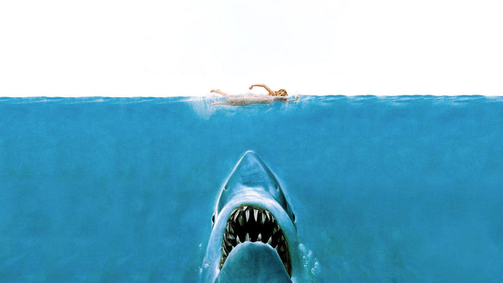
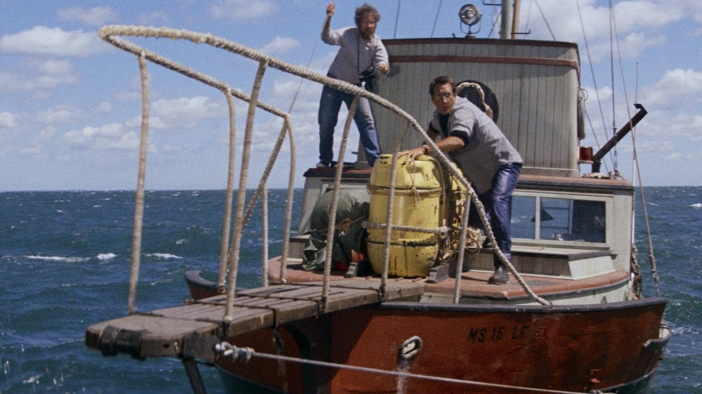
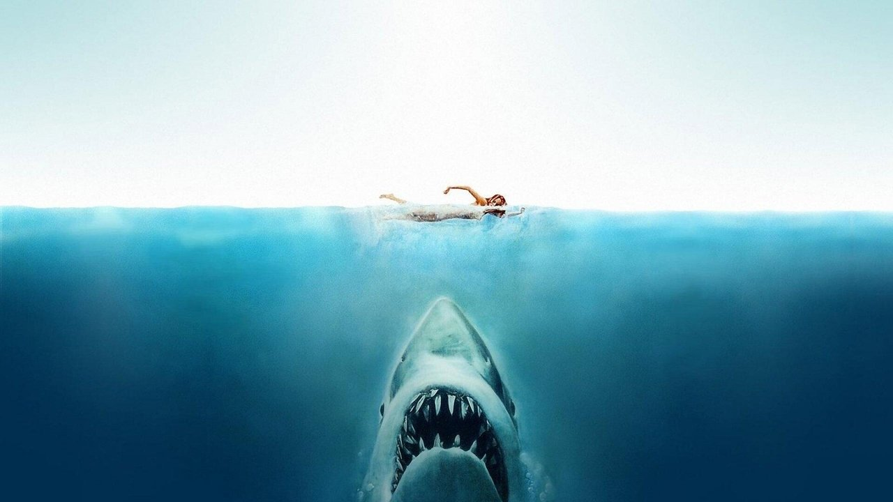
导演与主创 · 他们的历史作品

 侏罗纪公园
侏罗纪公园 辛德勒的名单
辛德勒的名单 拯救大兵瑞恩
拯救大兵瑞恩 猫鼠游戏
猫鼠游戏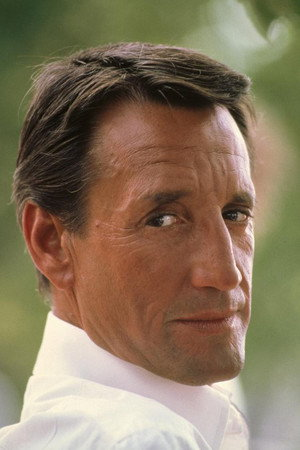
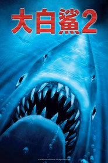
大白鲨2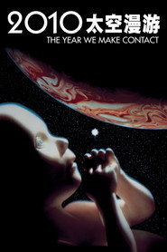
2010太空漫游 法国贩毒网
法国贩毒网 惩罚者
惩罚者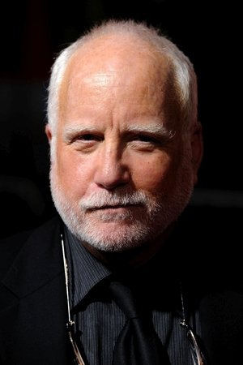
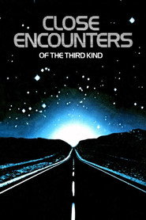
第三类接触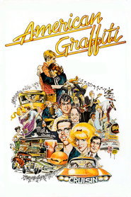
美国风情画 赤焰战场
赤焰战场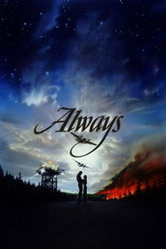
直到永远短评（轻微剧透）
《大白鲨》最被人误解的一点，是它常被当成一部「鲨鱼片」。其实它是一部关于「看不见」的电影——斯皮尔伯格把整部片的第一小时都花在了海平面以下的那团黑上：黄色的浮筒、一条腿、一只漂走的充气筏。真正让人生理不适的从来不是鲨鱼露出水面的那几秒，而是你知道它在，但不知道在哪。第二层好看的地方在于镇上的人。布罗迪要封海滩，所有人都在算另一笔账：旅游季、面子、选举。斯皮尔伯格拍得很克制，他没有把镇长写成坏人，只是让他一遍遍说「我们会处理的」。轻微剧透：最后鲨鱼爆炸那一下，是全片唯一一次彻底释放——而在此之前，布罗迪已经把所有的恐惧、愧疚和那句「我以前是怕水的」一起打进了氧气瓶里。
为什么值得一看
喜欢《异形》《怪形》《大白鲨》之后所有「你知道它在但看不见它」的观众；想看现代商业大片是怎么被发明出来的人。含突发惊吓与少量血腥。PG 级。2026 年 5 月起内地院线已公映过 4K 修复版，流媒体可看。
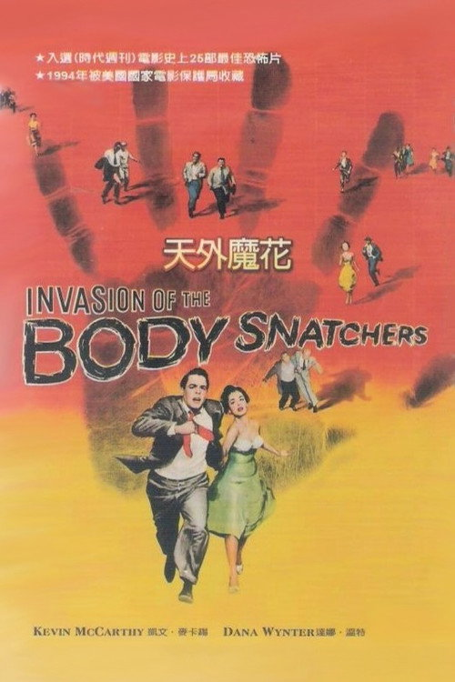
天外魔花 Invasion of the Body Snatchers
「他们已经不是他们了。」
剧情梗概
加州小镇圣米拉的医生迈尔斯·本内尔出差回来，发现预约的病人接连取消，镇上每个人都说「我没事」，可语气里什么都没有。朋友杰克在他家温室里发现了一具正在成形的身体——跟他一模一样。种子从太空来，落地长成豆荚，豆荚在你睡着的那一夜把你换掉：长相一样，记忆一样，只是没有了一切情感。等迈尔斯反应过来，整座镇子已经醒了。他和贝姬只剩下一件事可做：别睡着。
亮点
- 唐·西格尔（后来拍出《肮脏的哈里》《逃出亚卡拉》）的成名作，改编自杰克·芬尼 1954 年的连载小说《人体入侵者》。
- 成本约 41.7 万美元，全程在加州实地拍摄——小镇主街、糖厂、加油站都是真的，没搭一平方米的景。
- 全片只有 80 分钟，节奏快到几乎没有废镜头；西格尔自己说过，这是他唯一一部「一帧都不想剪」的片子。
- 关于它的政治解读争论了七十年：反麦卡锡主义（盲从与举报）、反共（思想渗透）、或者两者都是。西格尔本人一直否认寓言说，坚持「这就是个好故事」。
- 制片厂强加了一段首尾的「框型叙事」——迈尔斯在公路上被当成疯子拦下，向警察倒叙。西格尔极不喜欢这个改动，因为它把原本绝望的结局改成了「终于有人信了」。
- 被重拍过四次：1978 年考夫曼版（旧金山）、1993 年《异形基地》、2007 年《致命拜访》、2018 年剧集版；1994 年入选美国国会图书馆国家影片登记表。
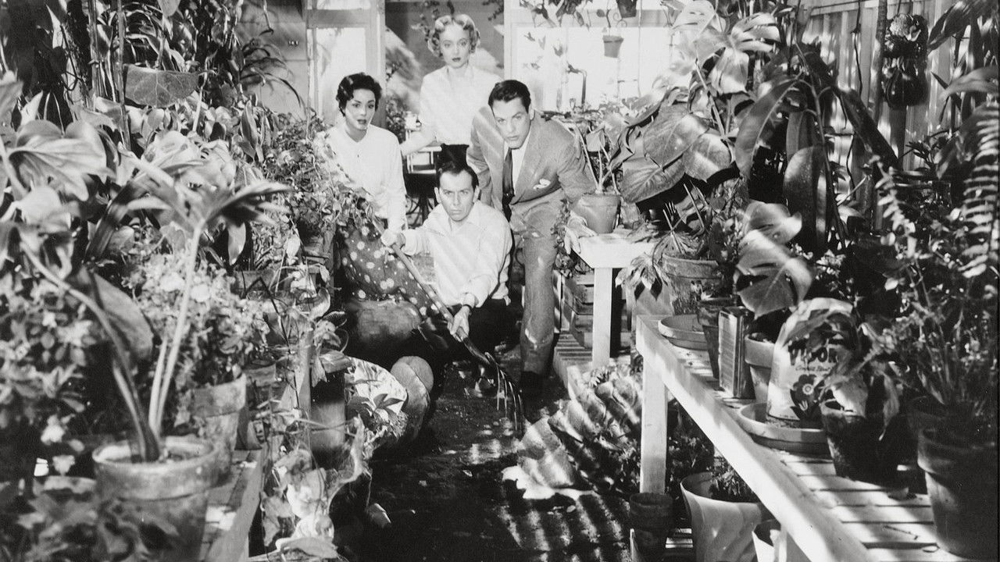
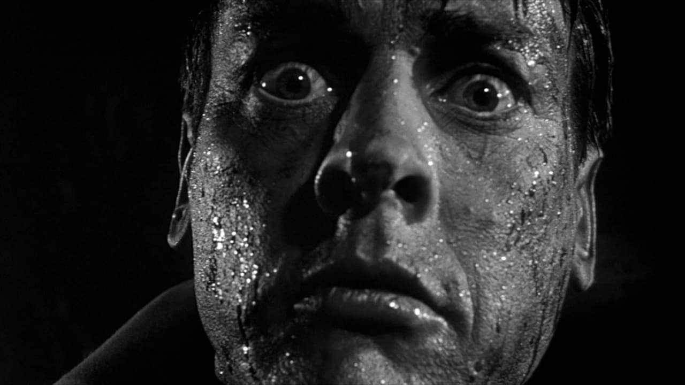
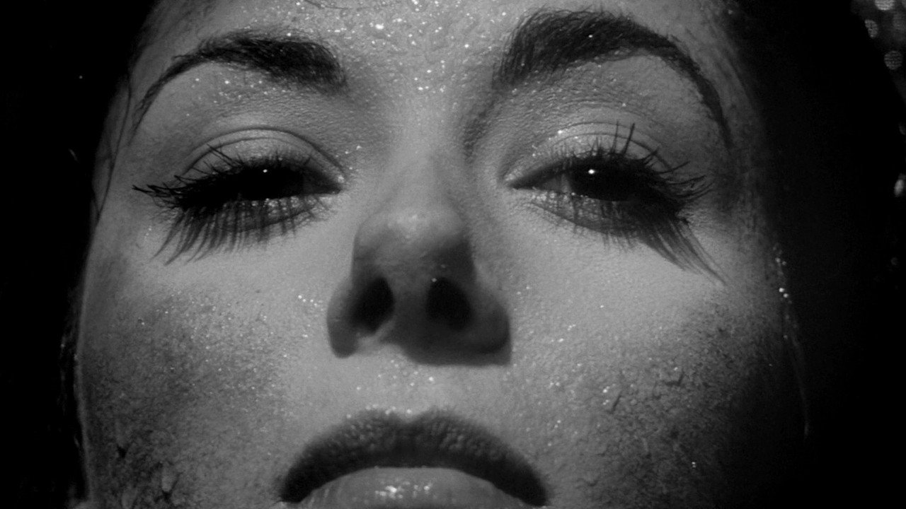
导演与主创 · 他们的历史作品
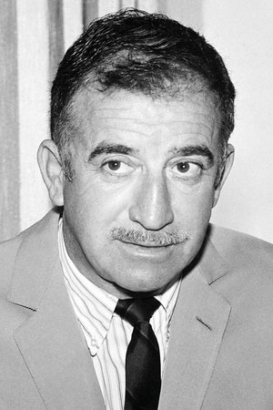
 逃出亚卡拉
逃出亚卡拉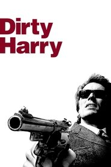
肮脏的哈里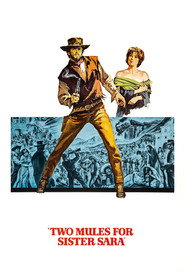
烈女镖客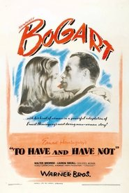
逃亡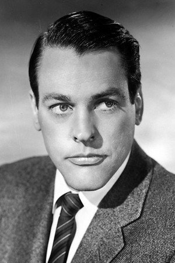
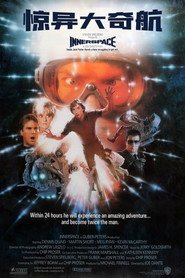
惊异大奇航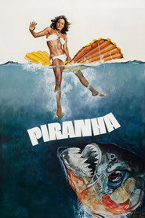
食人鱼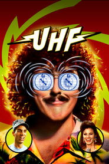
超高频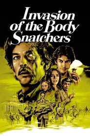
人体异形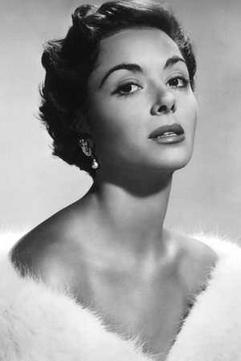
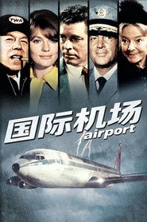
国际机场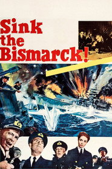
击沉俾斯麦号！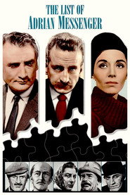
假面凶手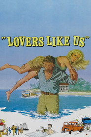
野岛真情短评（轻微剧透）
《天外魔花》最狠的地方在于它把「恐怖」定义成了一种状态，而不是一个东西。豆荚人不追你、不咬你、不发出声音。他们只是越来越多，而且每个人都真心实意地劝你「睡一觉吧，醒来就好了」——这才是这部片真正让人发凉的核心：被同化这件事，在片子里是被当作一种「解脱」来推销的。西格尔的另一个聪明之处是节奏。他没给它任何喘息的镜头，80 分钟内迈尔斯从怀疑到确认到逃亡一路直落，观众根本没有时间理性地想「这合理吗」。轻微剧透：结尾迈尔斯冲上公路对着一辆辆卡车大喊「他们来了，你们是下一个」，制片厂加的框型叙事让这场戏变成了「有人在听」。而西格尔原本的版本里，只有他自己听见。
为什么值得一看
喜欢《怪形》《隐形人》《复制娇妻》这类「身边人不对劲」的观众；想看冷战恐惧如何被拍成一部 80 分钟的黑白 B 级片的人。无血腥、无脏话，靠氛围推进。内地未引进，流媒体可看。
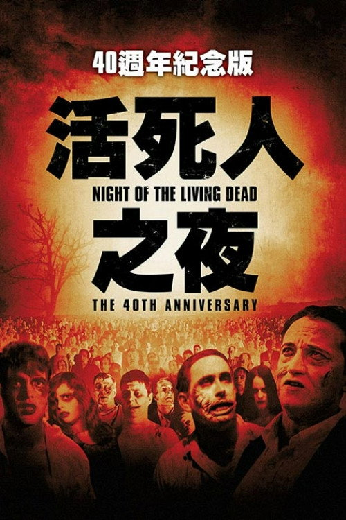
活死人之夜 Night of the Living Dead
「他们还活着，但他们不是活人。」
剧情梗概
宾夕法尼亚一处墓地，芭芭拉陪哥哥来扫墓，被一个摇摇晃晃的男人袭击，哥哥倒地不起。她逃进一栋荒废的农舍，遇上开着卡车路过的本。屋子里陆续聚起七个人，屋外的人越来越多。他们钉木板、守门窗、抢收音机、为「该躲在地下室还是楼上」吵到动手。广播里断断续续地说：死人正在复活，原因不明，但打脑袋能让他们停下来。
亮点
- 乔治·A·罗梅罗的第一部长片，成本约 11.4 万美元，一群朋友凑的钱，在匹兹堡拍了九个月。他同时兼任导演、编剧、摄影与剪辑。
- 用的是过期的短卷胶片，粗糙、颗粒重、对比度失控的黑白质感，后来反而成了它最重要的美学标签。
- 杜安·琼斯演的本是一位黑人男主——1968 年，距离《民权法案》通过只有四年。罗梅罗说选角理由只是「他试镜最好」，但选上了就得承担这个事实。
- 「丧尸」(zombie) 这个词在片中一次都没出现，他们被叫做 ghouls。吃人、爆头才死、行动缓慢、被咬即感染——这套规则是罗梅罗在这里定下的，跟伏都教传统其实没什么关系。
- 因为发行方在拷贝上漏印了版权声明，本片自上映起就落入公有领域，任何人都可以免费放映。这既是它传播极广的原因，也是罗梅罗几乎分文未得的原因。
- 1999 年入选美国国会图书馆国家影片登记表；后来所有丧尸片——从《活死人黎明》到《行尸走肉》——都是它的注脚。
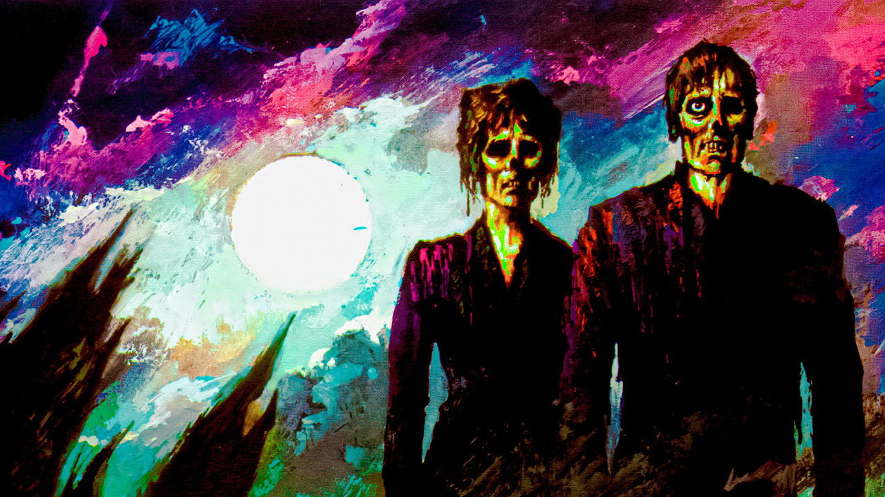
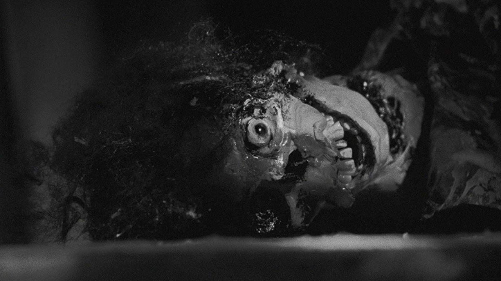
导演与主创 · 他们的历史作品
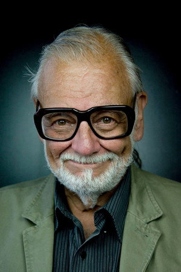
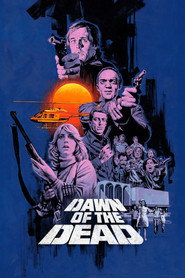
活死人黎明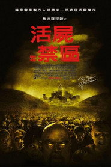
活死人之地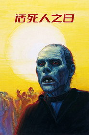
活死人之日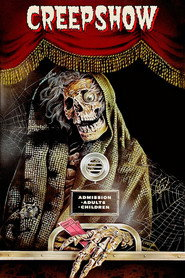
鬼作秀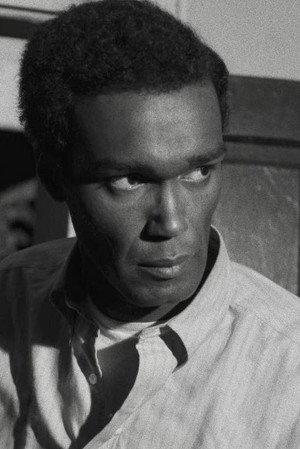
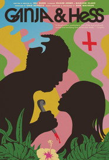
血色夫妻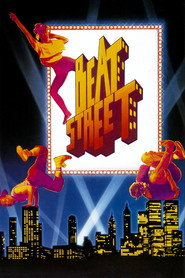
街头舞士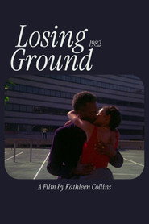
迷失之地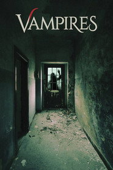
吸血鬼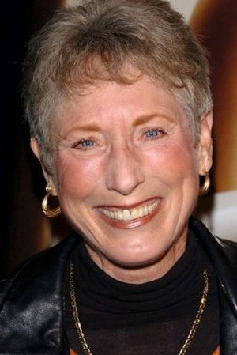
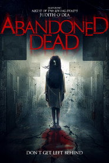
Abandoned Dead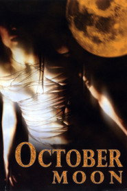
October Moon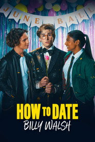
其实我爱你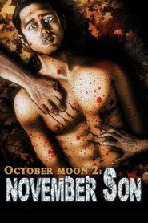
October Moon 2: November Son短评（轻微剧透）
很多人以为《活死人之夜》是「第一部丧尸片」，其实不是；它做的是更重要的一件事：给丧尸定规则，并且把恐怖的源头从外面挪进来。真正让这部片撑不住的不是屋外的活死人，而是屋里的七个活人——他们从头到尾没能达成一致，争吵、隐瞒、各自为战，最后几乎每一个人的死都和「有人做了个错误决定」有关。罗梅罗的镜头语言非常脏、非常急，他不给你看清全局的机会。轻微剧透：全片最重的一击不在恐怖段落，而在结尾。本熬过了整夜，活到最后，天亮时被一支路过的民兵当成丧尸一枪打死，尸体被钩子拖走扔进火堆。整个过程不到一分钟，没有台词。1968 年，一个黑人主角活了下来，然后被白人民兵打死——这一下把整部片从 B 级恐怖片抬成了时代的证词。
为什么值得一看
喜欢《活死人黎明》《惊变28年》《行尸走肉》这类丧尸题材、想看源头的人；对社会隐喻有兴趣的观众。黑白、低成本、含吃人与枪击画面。内地未引进，公有领域，流媒体可看。
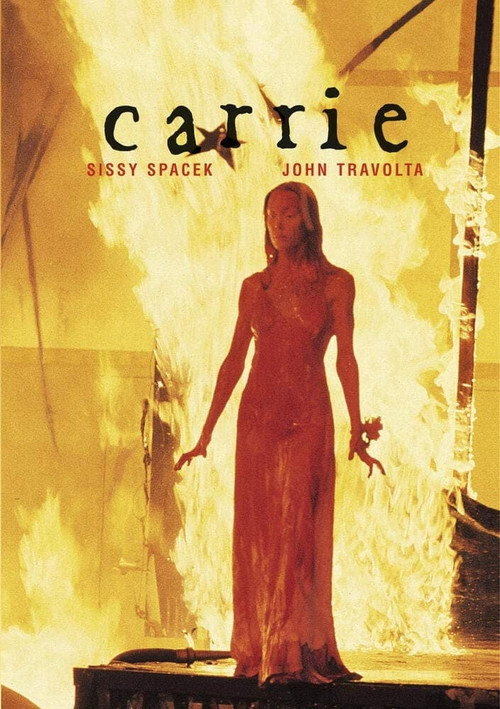
魔女嘉莉 Carrie
「他们都会笑你的。」
剧情梗概
嘉莉·怀特是高中里最不起眼的那个人。她的母亲是宗教狂热者，连女儿第一次来月经都当成罪。在体育馆淋浴时嘉莉第一次来潮，吓得尖叫，换来的是全班女生拿卫生巾砸她、追着她喊。体育老师替她出头，罚带头的克丽丝跑圈；克丽丝要报复。毕业舞会临近，嘉莉发现自己能让东西动——不用碰，只是想。她决定去舞会，穿自己缝的裙子，和那个被派来陪她的男生一起。
亮点
- 布莱恩·德·帕尔玛执导，改编自斯蒂芬·金第一部出版的长篇小说（1974）。金后来反复说，德·帕尔玛抓住了书里他真正想写的那部分——不是超能力，是羞辱。
- 茜茜·斯派塞克与派珀·劳瑞双双获奥斯卡提名（最佳女主 / 最佳女配），是恐怖片在表演奖项上极其罕见的一次双提。
- 开场的淋浴戏用慢镜 + 分裂画框（split diopter），把一场私人生理事件拍成了公开的酷刑；这套视觉语言被后来四十年的校园恐怖片抄了个遍。
- 舞会那场猪血戏用的是真正的糖浆加色素，斯派塞克被淋了整整一天。她最后要求再来一遍，理由是第一次她的表情「还不够空」。
- 结尾「手从坟里伸出来」是影史最著名的假结尾之一——德·帕尔玛借了《惊魂记》那套「事件之后」的冷处理，然后补上最后一击。
- 它确立了「校园 + 霸凌 + 超自然」这个子类型，直接影响《惊声尖叫》《魔女游戏》与整个 1990 年代的青春恐怖片。
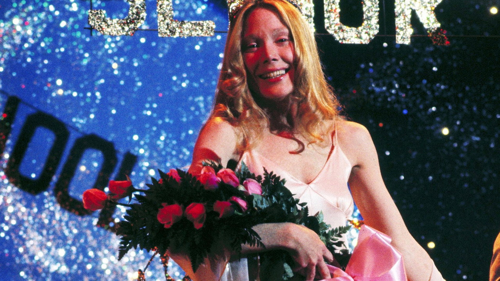
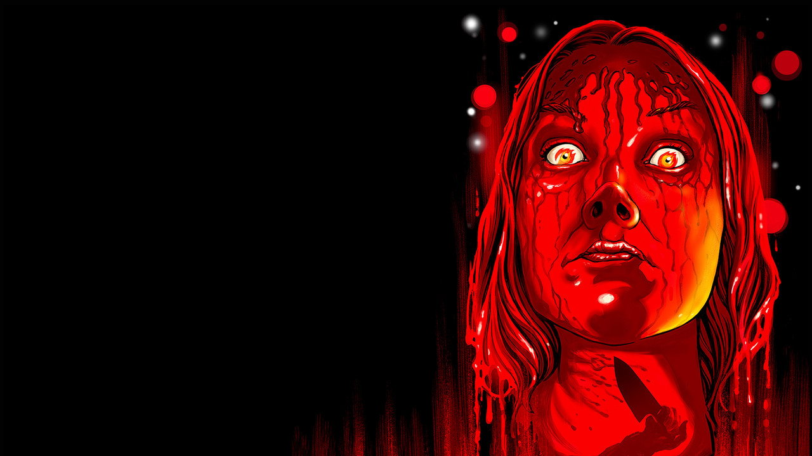
导演与主创 · 他们的历史作品
 疤面煞星
疤面煞星 碟中谍
碟中谍 相助
相助短评（轻微剧透）
《魔女嘉莉》其实有两部电影叠在一起。第一部是一个极度具体的校园霸凌故事——德·帕尔玛把前三十分钟拍得非常不舒服，因为那些嘲笑不是电影式的夸张，而是真实的、琐碎的、会让人记住一辈子的那种。第二部才是超自然：念力不是天赋，是嘉莉被压到极限之后的出口。这也是为什么最后那场舞会戏能成立——观众在前面三十分钟里已经被说服了「这些人该付出代价」，所以杀戮来临时你既害怕又有一丝说不清的痛快，德·帕尔玛很清楚自己在做什么。轻微剧透：真正的结局不是舞会，是第二天早上。嘉莉回到家，母亲抱着她说「我们祈祷吧」，然后在她背上捅了一刀。房子在念力中塌下来，母女一起被埋。所有恐怖的终点，回到了那个她从来没能离开的家。
为什么值得一看
喜欢《惊声尖叫》《它在身后》《珀尔》这类「青春 + 恐怖」的观众；能接受校园霸凌、宗教压迫与强暴力画面的人。R 级。内地未引进，流媒体可看。
凶兆 The Omen
「1966 年 6 月 6 日，早晨六点。」
剧情梗概
美国驻英大使罗伯特·索恩的孩子出生即死。医院的神父劝他：换一个，别告诉妻子。他照做了，抱回一个刚失去母亲的新生儿，取名戴米。五年后，戴米长成一个安静漂亮的男孩，而索恩身边的人开始一个接一个地死——保姆在生日宴上当众上吊、摄影师在教堂前被一块玻璃削掉头、追查真相的牧师被避雷针穿透。一个摄影师留下的照片里，孩子的头发上有一道和牧师脖子上一模一样的伤痕。
亮点
- 理查德·唐纳（后来拍出《超人》《致命武器》《七宝奇谋》）执导，是他从电视圈转向电影的关键一跃。
- 格里高利·派克接这部片时 60 岁，距离《杀死一只知更鸟》已经十四年。他后来说接片原因很朴素：片酬够他在圣地亚哥建一座剧院。这也是他一生唯一一次演这类角色。
- 杰里·戈德史密斯的配乐拿下他唯一一座奥斯卡，《Ave Satani》把拉丁弥撒倒过来唱，同时入围最佳原创歌曲。
- 每一场死亡都设计成「可以被解释成意外」：绳索、玻璃、避雷针、刹车。单看都是事故，连在一起就成了命运——这套「连锁意外」后来成了整个《死神来了》系列的骨架。
- 美英两地实景拍摄，教堂、动物园、墓地都是真的；派克坚持不用替身拍被狒狒围攻那场戏。
- 成本 280 万美元，1976 年全球票房 6090 万，是当年最赚钱的电影之一，直接开启了 1970 年代末的「宗教恐怖」热潮（《驱魔人》之后、《凶兆》之中）。
导演与主创 · 他们的历史作品
 七宝奇谋
七宝奇谋 桃色血案
桃色血案短评（轻微剧透）
《凶兆》在技术上做得最漂亮的一件事，是它几乎不给你「超自然」的实感。没有驱魔、没有附体、没有变形，所有死亡都是物理的、可解释的。真正让人不安的是节奏：每一场死都来得比你预期的稍快一点，而且从不给主角（和观众）留出消化的时间。派克的表演是这部片的定海神针——他演的是一个越查越不敢查的父亲，从「我想知道真相」到「我不想知道了」的转变全在眼神里。轻微剧透：影片后半段索恩终于拿到了证据——孩子身上的 666 胎记。他带着孩子开车去教堂，准备用圣匕首了断。这个安排真正的恐怖点在于：他从头到尾都知道这是对的，仍然下不了手，最后是警察替他开的枪。而最后一个镜头里，那个孩子站在白宫的阳光下，回过头来看了一眼镜头。
为什么值得一看
喜欢《驱魔人》《罗斯玛丽的婴儿》《凶兆前传》这类宗教恐怖的观众；对「意外链条」式惊悚有兴趣的人。含斩首、上吊等较直接的死亡画面。R 级。内地未引进，流媒体可看。
星球大战4：新希望 Star Wars: Episode IV - A New Hope
「愿原力与你同在。」
剧情梗概
银河帝国的战舰截住了莱娅公主的信使船，机器人 R2-D2 带着死星的完整图纸和一段求救影像逃到沙漠星球塔图因，被废品商人卖给了农场少年卢克·天行者。卢克想离开这里，可他的叔叔婶婶刚被帝国士兵杀死。他跟着一个古怪的老人欧比旺学起了一种叫「原力」的东西，又雇下走私犯汉·索罗和他的大副丘巴卡，去救一个从没见过的公主。
亮点
- 乔治·卢卡斯在《美国风情画》成功后写完了这个剧本，多家制片厂拒绝，最后 20 世纪福斯给了 800 万美元（最终超支到 1100 万）。
- 1977 年 5 月 25 日在 32 家影院开画，福斯几乎没做宣发、也不看好。首周末之后一票难求，最终成为当时影史票房第一（全球约 7.75 亿美元，含多轮重映）。
- 拿下七项奥斯卡，包括最佳艺术指导、服装设计、剪辑、视觉效果、音效、配乐与一项特别成就奖；同时获最佳影片提名（输给《安妮·霍尔》）。
- 约翰·威廉姆斯用一整套交响乐给这部太空片定了「古典」的调子——在特效还很原始的年代，音乐承担了「让观众相信这个世界存在」的一半工作。
- 工业光魔（ILM）就是为这部片成立的，他们发明了带动作控制的摄影系统 Dykstraflex，才有了最后那场死星壕沟战。
- 卢卡斯放弃了自己 50 万美元的导演酬劳，换回续集与衍生品的全部版权。这个决定让他成为好莱坞最富有的独立电影人之一。
导演与主创 · 他们的历史作品
 星球大战8：最后的绝地武士
星球大战8：最后的绝地武士 星球大战9：天行者崛起星球大战9：天行者崛起星球大战8：最后的绝地武士
星球大战9：天行者崛起星球大战9：天行者崛起星球大战8：最后的绝地武士短评（轻微剧透）
今天再看《新希望》，最容易被忽略的恰恰是它当初最革命的东西：它不解释。卢卡斯开篇就让观众掉进一个已经运转了很久的世界——帝国、义军、绝地、原力，一个都没有铺垫，字幕滚动完就直接进入追击战。这种「不把你当外行但也完全不等你」的态度，在当时是反常识的，也是它让人一下子觉得自己「到过那里」的原因。第二个优点是它的脏。卢卡斯搭了一个有划痕、有油泥、有二手机器人的银河系，而不是光洁的未来——这让 1977 年的观众第一次觉得科幻片里的东西像真的被用过。轻微剧透：最后那场壕沟战之所以到今天还成立，不是因为特效，而是因为它在最后三分钟把「科技」和「直觉」对立了起来：卢克关掉瞄准计算机，选择相信原力。这是整部片真正的核心命题，也是它为什么能撑住后面四十多年。
为什么值得一看
还没看过、或者只在短视频里看过片段的观众；想理解「现代大片」这个概念是怎么被造出来的人。全家可看（PG 级）。内地未引进，流媒体可看。
窃听大阴谋 The Conversation
「他不在乎我们。他只在乎能不能录到。」
剧情梗概
哈里·考尔是旧金山最顶尖的监听专家，信教、独居、几乎不与人往来，做生意只有一条原则：我只负责录音，不负责后果。这次他接到的活是在联合广场录下一对年轻男女的谈话。他做到了——三种设备、三个角度，合成一盘听起来完美无缺的带子。交带时对方说不用母带，直接给就行。哈里不肯。他把那盘带子反复听了几十遍，越听越确定一句话重音不对：不是「他有时候会杀了我们」，而是「他有时候会杀了我们」。
亮点
- 弗朗西斯·福特·科波拉在《教父2》同年完成的另一部作品，自编自导自制片。他本人说过，这是他「最个人」的一部电影。
- 开场那八分钟的监听长镜头是影史最著名的一段声音叙事：从广场上方的远眺一路推近到两人的低语，观众听到的每一步逼近，都是哈里做到的。
- 音效师沃尔特·默奇（后来做《现代启示录》《英国病人》）把「听不清」这件事本身变成了叙事工具——观众和哈里一样，整部片都在猜那一句到底是什么。
- 吉恩·哈克曼的哈里·考尔是他自己最看重的角色：一个把技术做到极致、却完全没有能力处理「人和人之间」的人。
- 剧本写于 1960 年代末，1974 年 8 月上映，而尼克松在 8 月 9 日辞职。这种时间上的巧合让它成了整个水门时代最精准的一则注脚。
- 结尾哈里把自家公寓拆成废墟找窃听器、最后坐在满地碎片里吹萨克斯的段落，是 1970 年代美国电影最著名的收尾之一。
导演与主创 · 他们的历史作品
 教父
教父 教父2
教父2 天才一族法国贩毒网教父2教父
天才一族法国贩毒网教父2教父短评（轻微剧透）
《窃听大阴谋》是一部关于「听错了」的电影。哈里是全世界最会听的人，他能从广场的噪讯里把一句耳语分离出来，却把那句话的意思听反了——他以为自己是在救一个女人，实际上他交出去的带子已经把人杀了。科波拉把整个故事压在哈里的视角里，观众拿到的信息从来不比他多，所以到最后你会和他一起发现：技术上的完美，和判断上的正确，完全是两件事。轻微剧透：影片真正的转折是那句被重音错置的话。哈里一直替「弱者」担心，可真正的弱者从头到尾都不是他以为的那个人。最后他坐在被自己拆光的公寓里吹萨克斯——他没有找到任何窃听器。这才是最冷的地方：他终于成了一个被监听的人，或者他只是终于活成了自己那个职业的样子。
为什么值得一看
喜欢《对话》《窃听风暴》《聚焦》这类「信息 + 道德」题材的观众；做技术、做安全、做媒体的人会有额外共鸣。节奏偏慢，靠氛围推进。内地未引进，流媒体可看。
总统班底 All the President's Men
「跟着钱走。」
剧情梗概
1972 年 6 月 17 日凌晨，水门大厦里五个人被当场抓住。《华盛顿邮报》派了入职才九个月的记者鲍勃·伍德沃德去旁听。他发现这几个人的通讯录上有白宫的电话。他和另一个记者卡尔·伯恩斯坦开始敲门、打冷电话、翻图书馆的微缩胶卷、在深夜的停车场里等一个不肯露面的线人。线人只说了一句有用的话：跟着钱走。
亮点
- 艾伦·J·帕库拉执导，威廉·高德曼编剧（凭此片拿下第二座奥斯卡改编剧本奖），是「偏执三部曲」（《柳巷芳草》《视差》《总统班底》）的收尾作。
- 杰森·罗巴兹凭执行主编本·布拉德利拿下奥斯卡最佳男配角；影片共八项提名、四项获奖。
- 摄影是「黑暗王子」戈登·威利斯（《教父》系列），他把报社的顶灯压到极低，让新闻室看起来像个审讯室——光是从桌上的台灯反上去的。
- 《华盛顿邮报》拒绝剧组进楼拍摄，剧组干脆花 20 万美元在伯班克一比一复刻了整个新闻室，从同一家供应商买同款办公桌，连旧电话簿和废纸篓都还原。
- 成本 850 万美元，全球票房 7060 万美元，1976 年北美年度第四。
- 「深喉」的真实身份（FBI 副局长马克·费尔特）直到 2005 年才公开——影片上映时，观众和两位记者一样不知道那个人是谁。
导演与主创 · 他们的历史作品
 美国队长2
美国队长2 西部往事
西部往事 费城故事
费城故事 木兰花
木兰花短评（轻微剧透）
《总统班底》最了不起的一点是它几乎没有任何动作场面，却能让你两个多小时坐得住。帕库拉的做法是把「查证」本身拍成悬疑：一个电话没人接、一个名字对不上、一个数字查不到——这些东西被剪出了追车的节奏。与此同时他又极克制，不给英雄光环：伍德沃德和伯恩斯坦会犯错、会自大、会被编辑骂回来，最后那篇稿子能发出来，靠的不是天才，是一遍又一遍的核实。轻微剧透：影片真正的结尾并不在「我们发稿了」，而在最后那个打字机镜头——尼克松就职典礼的画面旁边，打字机一个键一个键地敲出下一批名字。帕库拉没有做任何总结，因为故事本来就没有结束。
为什么值得一看
喜欢《聚焦》《华盛顿邮报》《大空头》这类「制度 + 真相」题材的观众；从事媒体、法律、公共事务的人会更有共鸣。节奏沉稳，需要一点耐心。内地未引进，流媒体可看。
海边的曼彻斯特 Manchester by the Sea
「我走不出来。」
剧情梗概
李·钱德勒在波士顿做杂工：扫地、通马桶、跟人吵架，住在半地下室里。哥哥乔心脏病发去世，把他叫回老家海边的曼彻斯特——乔在遗嘱里指定他做 16 岁侄子帕特里克的监护人。李必须回来办丧事，也必须面对这座他曾经有妻子、三个孩子和一栋房子的镇子。闪回一点一点告诉你：他为什么再也没办法住在这里。
亮点
- 肯尼斯·罗纳根自编自导的第三部长片（前两部是《我办事你放心》《玛格丽特》），凭此片拿下奥斯卡最佳原创剧本，并获最佳影片、最佳导演提名。
- 卡西·阿弗莱克拿下奥斯卡、金球、英国电影学院三座影帝；米歇尔·威廉姆斯获奥斯卡最佳女配角提名——她和前妻兰迪在街头重逢那场戏，是全片最长、也最不敢看的一个镜头。
- 全片在马萨诸塞州实地拍摄，冬天的海港、渔业码头、老房子都是真的；罗纳根拍了大量「赶路」的段落——找律师、选棺材、算地板钱，生活的重量全在这些琐事里。
- 剧本最狠的设定是：李的灾难源于他自己的一次疏忽，而这个疏忽在法律上不构成犯罪，所以没有人判他刑。他只能自己判自己，一辈子。
- 它没有「治愈」段落。帕特里克也不是用来软化李的工具角色——他有自己的乐队、两个女朋友、一支冰球队，他的悲伤和叔叔的悲伤各自成立。
- 成本约 850 万美元，全球票房约 7900 万美元，是 2016 年投入产出比最高的严肃剧情片之一。
导演与主创 · 他们的历史作品
 星际穿越
星际穿越 心灵捕手
心灵捕手 毒液：致命守护者
毒液：致命守护者 禁闭岛
禁闭岛 毒液2
毒液2 马戏之王
马戏之王短评（轻微剧透）
大部分关于丧亲的电影，都在讲「怎么走出来」。《海边的曼彻斯特》讲的是另一件事：如果走不出来呢？罗纳根从头到尾没有给李任何一个「好转」的信号——他不哭、不倾诉、不对任何人解释，甚至在闪回里都保持着一种近乎迟钝的日常感。最厉害的是他把闪回处理成了侵入式的：不铺垫、不提示，前一秒还在谈棺材，后一秒就是那场火。观众和李一样，被拽回去，没有准备。轻微剧透：结尾李没有留下来。他把帕特里克托付给乔的朋友，自己回波士顿继续做杂工。这不是失败，也不是解脱——这是他现在能给出的最好安排。最后叔侄俩在街上走路的那场戏里，帕特里克说「你可以常来看我」，李说「好」。这部片全部的温柔就在这两句里。
为什么值得一看
喜欢《入殓师》《寻常的心》《美丽心灵的永恒阳光》这类「安静的重量」的观众；能接受 137 分钟慢节奏、没有答案的结局的人。含儿童死亡的重大情绪冲击。内地未引进，流媒体可看。
借刀杀人 Collateral
「我今晚会杀五个人。你只负责开车。」
剧情梗概
洛杉矶出租车司机麦克斯开了十二年车，攒钱想开一家自己的租车公司，每天对客人说同样的话。这一晚他载到一个叫文森特的乘客，文森特要他跑五个地方，一夜，五百块车费外加已经给的小费。第一个「地方」是一栋公寓楼——一具尸体从上面掉下来砸在出租车顶上。文森特是来杀人的，五个都是第二天要在法庭上指证毒枭的证人。而麦克斯的合同还没结束。
亮点
- 迈克尔·曼自导自制片，是他第一次大规模使用高清数字摄影（Sony HDW-F900）拍夜戏——洛杉矶的夜景全是真实城市灯光，几乎没有补光，颗粒和拖影都是数字摄影机的原生质感。
- 汤姆·克鲁斯主动要求演反派，为此练了几个月的枪械与体形，并把头发染成银灰。这个「银灰发的职业杀手」形象和他当时所有角色都不一样。
- 杰米·福克斯凭此片获奥斯卡最佳男配角提名；同年他凭《灵魂歌王》拿下影帝——同一年双线提名，影史少见。
- 全片的时间线几乎就是真实的一夜：从黄昏到天亮，节奏跟着洛杉矶的交通和街区走，城市的地理是准确的。
- 爵士酒吧那场戏是文森特唯一一次「放下」：一个专业杀手坐在台上听别人吹萨克斯，讲完一段话，然后回去继续杀人。
- 结尾的地铁段落把两个人都放进了一个完全不属于他们的空间——地铁是麦克斯每天路过、但十二年里从没下去过的地方。
导演与主创 · 他们的历史作品
 盗火线
盗火线 骇客交锋
骇客交锋 被解救的姜戈
被解救的姜戈 超凡蜘蛛侠2
超凡蜘蛛侠2 黑客帝国2：重装上阵
黑客帝国2：重装上阵 黑客帝国3：矩阵革命
黑客帝国3：矩阵革命短评（轻微剧透）
《借刀杀人》的结构很简单：一晚、两个人、一辆车。迈克尔·曼的全部功夫都花在让这四件事始终不塌。克鲁斯的文森特不是一个会咆哮的反派，他讲话有礼貌、爱搭话、对麦克斯的工作方式真的好奇——这种「职业性」反而让他更冷，因为他杀人不是出于恨，是按合同。而福克斯的麦克斯是这部片真正的弧光：他从一个只求不出事的司机，慢慢变成了一个必须做出选择的人。曼拍洛杉矶的方式也是主题的一部分——这座城市在夜里是发光的，但没有人真的看见谁。轻微剧透：最后麦克斯把车撞向护栏、带着证人跳下车跑进地铁站，是这部片唯一一次真正的「主动」。而文森特死在车厢里，临死前说的最后一句话不是威胁，是一句礼貌的、关于「你有没有想过我为什么选你」的提问。
为什么值得一看
喜欢《盗火线》《亡命驾驶》《的士司机》这类「城市夜 + 专业人士」的观众；想看汤姆·克鲁斯演反派的人。含枪击与较强暴力。R 级。内地未引进，流媒体可看。